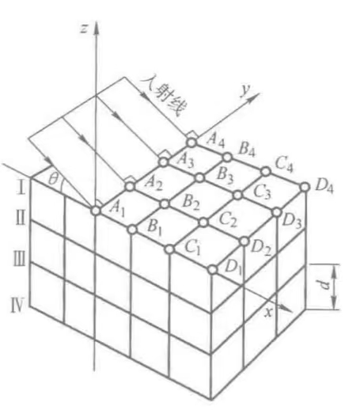
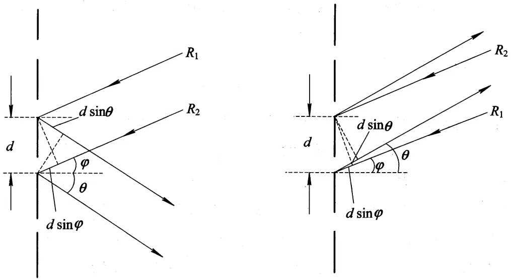
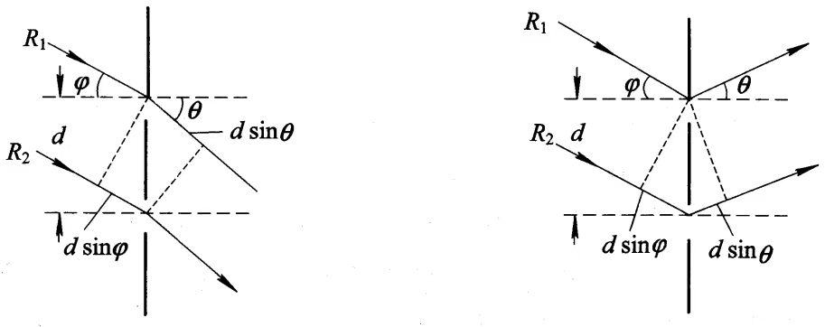
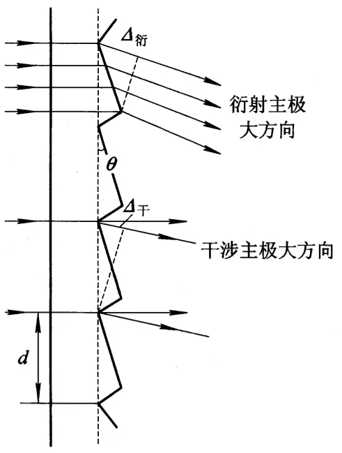
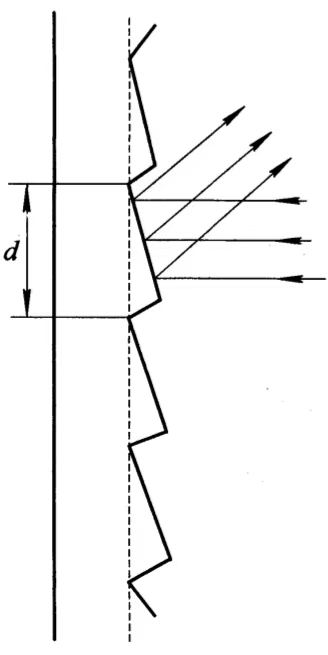
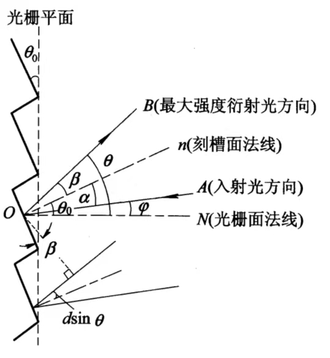

能对入射光波的振幅或相位进行空间周期性调制，或对振幅和相位同时进行空间周期性调制的光学元件称为衍射光栅.
结构由大量等宽、等间隔的平行狭缝构成的光学元件.
原理多缝夫琅禾费衍射.
应用分光.
使用光栅作分光元件的光谱仪.
广义上讲，光栅应该包括以下分类：
| 按工作方式分 | 透射光栅 |
| 反射光栅 | |
| 按对入射光的调制作用分 | 振幅光栅 |
| 相位光栅 |
用于透射光衍射的光栅.
在光学平板玻璃上刻划出一道道等宽、等间距的刻痕，刻痕处不透光，未刻处则是透光的狭缝.
用于反射光衍射的光栅.
在金属反射镜面上刻划一道道刻痕，刻痕上发生漫反射，未刻处在反射光方向发生衍射，相当于一组衍射狭缝.
[注]这两种光栅仅对入射光的振幅进行调制，改变了入射光的振幅透射系数或反射系数的分布，因此为振幅光栅.
缝是光栅的透光部分，宽度为\(a\)；刻痕是光栅的不透光部分，宽度为\(b\)。
\(a+b\)称为光栅常数。
光栅公式 $$(a+b)\sin\phi = k\lambda, ~~ k = 0,\pm1,\pm2,\cdots$$此为光栅衍射明条纹位置满足的公式。
晶体的晶格在三维空间中具有周期性结构，对于波长较短的X射线，是一个理想的体光栅.
体光栅的衍射规律可以分为两步分析：
1、点间干涉：同一晶面中各个格点间的干涉.
2、面间干涉：不同晶面间的干涉.
整个晶体点阵可看作由一族相互平行的晶面Ⅰ、Ⅱ、Ⅲ……组成.
设这些晶面平行于x-y面，入射的X射线垂直于y轴，并与晶面族成\(\theta\)角（掠射角）.

[设]平行光束以入射角\(\theta_i\)入射到光栅上.
反射光栅
平面透射光栅
$$\Delta = d\sin\theta_i \pm d\sin\theta_r$$ 光波斜入射时的光栅方程 $$d(\sin\theta_i \pm\sin\theta_r) = m\lambda,\quad m = 0,\pm1,\pm2,\cdots$$入射光与衍射光位于光栅法线同侧时，上式取正号；反之取负号.
由光栅方程，对于给定光栅常数\(d\)的光栅，当复色光照射时，除0级衍射外，不同波长的同一级衍射光不重合，即发生色散现象.
对应于不同波长的各级亮线.
对于同一级次，\(\lambda\)越大，衍射角越大.
衍射级次越大，不同波长的光栅谱线分开的程度越大.
白光以入射角\(\theta_i\)入射到光栅上时，对于每个\(m\)级衍射光都有一系列按波长排列的光谱，该光谱称为\(m\)级光谱.
\(m=0\)时，为零级光谱，\(\theta_i = \theta_r\)，无色散作用，所有波长的光都混在一起，仍为白光.
对于透射光栅，零级光谱在相应的入射光方向；对于反射光栅，零级光谱在相应的反射光方向上.
零级光谱两侧均有\(m\neq 0\)的光谱，\(m\gt0\)时为正级光谱；\(m\lt0\)时为负级光谱.
每块光栅在给定入射角\(\theta_i\)的情况下，其最大光谱数为：
$$|m_M| = \frac{(1\pm\sin\theta_i)d}{\lambda}$$即，\(\theta_i\neq 0\)时，正级光谱与负极光谱的级数是不相等的.
作为色散元件，无色散的零级光谱占据了总能量的很大一部分，而光谱分析中使用的较高级次光谱却只占了很少一部分能量，因此衍射效率（衍射光能量与入射光能量之比）很低.
其原因在于单缝衍射的中央主极大与缝间干涉的零级主极大（即零级光谱）重合.
每一条单缝的中央主极大都与多缝干涉的零级主极大完全重合
闪耀光栅又叫炫耀光栅、定向光栅，是一种相位型光栅，其弥补了平面光栅的不足，可以使光能量几乎全部集中到所需要的光谱级次上.
由光栅的分光原理可知，光栅衍射的零级主极大无色散作用，不能用于分光，光栅分光必须利用高级主极大.
但由多缝衍射的强度分布可知，多缝衍射的零级主极大占有很大一部分光能量，因此可用于分光的高级主极大光能量较少，大部分能量被浪费.
因此在实际应用中必须改变通常光栅的衍射光强度分布，使光强度集中到有用的那一级高光谱级上.
瑞利在1888年首先提出，理论上可能将能量从对分光无用的零级主极大转移到高级谱上.
Wood在1910年首先成功刻制出了形状可控制的沟槽，制成了所谓的闪耀光栅.
闪耀光栅的巧妙之处在于其刻槽面与光栅面不平行，存在一夹角\(\gamma\)（称为闪耀角）.
闪耀角可以使单个刻槽面（相当于单缝）衍射的中央极大和各槽面间（缝间）干涉零级主极大分开，将光能量从干涉零级主极大（即零级光谱），转移并集中到某一级光谱上去，实现该光谱的闪耀.
平面衍射光栅之所以零级主极大占有很大一部分光能量，是由于干涉零级主极大与单缝衍射主极大重合，而这种重合起因于干涉和衍射的光程差均由同一衍射角决定.
回到平面衍射光栅，理解什么叫“干涉零级主极大”与“单缝衍射主极大重合”
透射式闪耀光栅：在平面玻璃上刻制锯齿形细槽.

反射式闪耀光栅：在金属平板表面刻制锯齿槽.

闪耀光栅可以通过折射和反射的方法，将干涉零级与衍射中央主极大位置分开.
在这种结构中，光栅面和锯齿槽面方向不同，光栅干涉主极大方向是以光栅面法线方向为其零级方向，而衍射的中央主极大方向则是由刻槽面法线方向等其他因素决定的.
以反射式闪耀光栅为例，说明如何实现干涉零级和衍射中央主极大方向的分离.
[设]闪耀角（锯齿槽面与光栅平面的夹角）为\(\theta_0\).
[设]刻槽周期（锯齿槽宽度）为\(d\).

对于按\(\phi\)角入射的平行光束A，其单槽衍射中央主极大方向为其槽面的镜反射方向B.
\(\alpha = \beta\)，后面会说.
单槽近似为有限宽度倾斜平面反射镜.
光波遇到“有限尺寸的边界、小孔、障碍、反射面、周期结构”时，都会发生衍射.
干涉主极大方向由光栅方程决定：
$$d(\sin\theta_i \pm\sin\theta_r) = m\lambda$$阶梯光栅是由一系列平行平面厚玻璃板组成的
正弦型振幅光栅能对入射光波的振幅按余弦或正弦函数变化规律进行调制，而不影响其相位分布.
其复振幅透射系数为：
$$t(x_1, y_1) = \left(1 + B\cos2\pi\frac{1}{d}x_1\right)$$这是一个在\(x_1\)方向上无限长的一维光栅.
由光栅方程可知，除0级外，不同波长的同一级主极大对应不同的衍射角.
这种现象称为光栅的色散.
光栅有色散，表明其有分光能力.
光栅的色散可以用角色散与线色散表示.
相差单位波长的两条谱线通过光栅分开的角度.
聚焦物镜焦面上相差单位波长的两条谱线分开的距离.
$$\frac{\mathrm{d}l}{\mathrm{d}\lambda} = f\frac{\mathrm{d}\theta}{\mathrm{d}\lambda} = f\frac{m}{d\cos\theta}$$